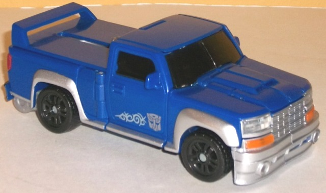
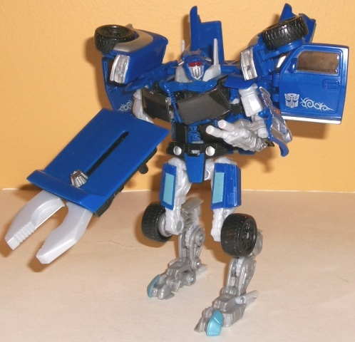

Super
Tuner Throwdown (Wal-Mart Exclusive)
Super
Tuner Throwdown (Wal-Mart Exclusive)
Price
: $27 U.S.
Overall Rating
: 7.6
(NOTE: Because this set is composed of repaints,
this is not a full-blown review. This mainly covers any changes made to
the set and the color scheme, and merely compares it to the original versions
of these molds. For a review on TF1 Dropkick, the mold used for Blowpipe,
go
here
. For a review on mass-release RotF
deluxe Sideways, go
here
.)
Blowpipe


Allegiance
: Autobot
Size
: Deluxe
Difficulty of Transformation
: Medium
Color Scheme
: Moderately dark blue,
light milky gray, light milky greenish gray, and some silver, clear plastic,
transparent orange, transparent red, tinted clear plastic, black, and light
metallic blue
Individual Rating
: 8.7
Blowpipe here is an homage
to the G1 character Pipes-- also a truck with a somewhat similar coloration.
Pipes likely wasn't his name for copyright reasons, but you can affirm
the homage with the clever "P1-P35" license plate. The dark blue and silver/gray
color scheme isn't exactly the most original, but it fits the alt mode
pretty well, and both colors go fairly nicely with each other. The milky
gray coloration used in robot mode... I know I've said this a lot by now,
but blah. It's not bad, just tremendously boring when used this much. The
silver in vehicle mode looks way better. Blowpipe has a lot of accent colors,
but most of them are used in small amounts, such as on his taillights and
headlights. This by itself isn't a bad thing, as all the necessary details
are covered, but pretty much JUST that. Little decorations on the bottoms
of the truck doors aren't enough to keep the truck mode from looking a
bit barren on the topside with all that blue. There are some really nice
light blue paint apps on his robot mode, though-- they really contrast
very nicely with the darker blue.
No mold changes have
been made to Blowpipe.
Blowpipe Tech Specs
:
Strength: 8.0
Intelligence: 8.0
Speed: 7.0
Endurance: 7.0
Rank: 5.0
Courage: 8.0
Fireblast: 6.0
Skill: 9.0
Sideways
Allegiance
: Decepticon
Size
: Deluxe
Difficulty of Transformation
: Medium
Color Scheme
: Black, transparent
light pinkish red, metallic gunmetal gray, silver, and some clear plastic
and light red
Individual Rating
: 7.0
Sideways here is exactly
the same as the gunmetal gray variant of the mass release. No changes whatsoever.
Sideways Tech Specs
:
Strength: 4.0
Intelligence: 7.0
Speed: 7.0
Endurance: 5.0
Rank: 3.0
Courage: 4.0
Fireblast: 3.0
Skill: 4.0
The Super Tuner Throwdown
set is a bit of a disappointment. Blowpipe is a pretty good mold, but his
color scheme, though not outright awful, looks a tad dull compared to the
other released versions of his mold, and is really darn similar to Dropkick's.
Sideways is the unchanged mediocre mold that he is. Couple that with the
rather ridiculous $27 price tag for two mass-produced deluxes, and you
have a set that I'd only mildly recommend at clearance prices.
Super Tuner Throwdown Bio
:
Blowpipe is obsessed with adapting Earth
technology to work in his alien body. Endless tinkering, with help from
Autobot Ratchet, has resulted in a remarkable fusion of technology, giving
Blowpipe surprising strength, speed and firepower. It's just these advantages
that give him the edge against his latest opponent--the Decepticon speedster
Sideways. Though the evil robot thinks he can rely on his speed to escape,
he's in for a surprise when he sees Blowpipe easily keeping up.
Review by Beastbot
Back to Transformers:
Revenge of the Fallen Index